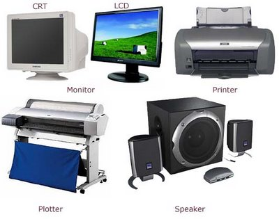

หน่วยแสดงผล คือ เป็นอุปกรณ์ที่ใช้ในการแสดงผลลัพธ์หรือสารสนเทศที่ผ่านการ ประมวลผล โดยจะแปลงผลลัพธ์จากสัญญาณไฟฟ้าของเครื่องคอมพิวเตอร์ให้กลายเป็นรูปแบบที่ มนุษย์เข้าใจ เช่น ตัวอักษร ตัวเลข สัญลักษณ์พิเศษ รูปภาพ ภาพเคลื่อนไหว และเสียง เป็นต้น อุปกรณ์หน่วยแสดงผลที่นิยมใช้ในปัจจุบัน มีดังนี้ 1. แสดงผลทางบนจอภาพ ( Monitor) เป็น อุปกรณ์ที่ใช้ในการแสดงผลลัพธ์ในรูป ตัวอักษร ตัวเลข ภาพนิ่งและภาพเคลื่อนไหวได้ในขณะที่เปิดเครื่องคอมพิวเตอร์เท่านั้น แต่เมื่อปิด เครื่องคอมพิวเตอร์จะไม่สามารถเห็นผลลัพธ์ได้ จอภาพอาจเรียกว่าหน่วยแสดงผลชั่วคราว จอภาพที่นิยมใช้ในปัจจุบันมีหลายชนิด ได้แก่ 1.1 จอซีอาร์ที (CRT : Cathode Ray Tube Monitor) เป็นจอภาพที่มีรูปร่างขนาด และ เทคโนโลยีเดียวกับโทรทัศน์ กล่าวคือ เป็นเทคโนโลยีที่มี หลักการท างานโดยการยิงล าแสงผ่านหลอดแก้ว แสดงผลขนาดใหญ่ที่เรียกว่า หลอดรังสีแคโทด ซึ่งท าให้ มีแสงมายังตากของผู้ใช้ค่อนข้างมาก 1.2 จอแอลซีดี (LCD : Liquid Crystal Display Monitor) เป็นจอภาพแบบแบน และใช้เทคโนโลยีการเรืองแสงของผลึกเหลว หรือ liquid crystal จึงท าให้ประหยัดพลังงานไฟฟ้า และแสงที่ส่องมายังตาผู้ใช้น้อย จึงท าให้ถนอมสายตาได้มากกว่าจอซีอาร์ที จอแอลซีดีแบ่ง ออกเป็น 2 ประเภท ดังนี้ 1) จอทีเอฟที (TFT : Thin film Transistor) หรือแอคทีปเมทริกซ์ เป็นหน้าจอที่มีการตอบสนอง ต่อการแสดงผลที่ค่อนข้างไว ประมวลผลการท างาน ได้รวดเร็ว ท าให้การแสดงผลมีความละเอียด สว่าง และมีความคมชัดมาก มักจะน าไปใช้ในโน้ตบุ๊ก เครื่อง พีดีเอ กล้องดิจิตอล เป็นต้น 2) จอพาสซีพเมทริกซ์ ( passive matrix) เป็น จอภาพที่ให้ความสว่างและความคมชัดน้อยกว่าจอทีเอฟที มักจะน าไปใช้เป็นจอโทรศัพท์มือถือทั่วไป หรือจอของ เครื่องพาล์มท็อบคอมพิวเตอร์ สีขาวด า 1.3 จอพลาสมา (plasma monitor) เป็นจอภาพที่มีเทคโนโลยีที่ให้มุมมองจอภาพที่กว้าง ถึง 160 องศา มีความสว่างและคมชัดมากกว่าจอแอล ซีดี สามารถแสดงภาพเคลื่อนไหวเร็ว ๆ ได้ดีจึงเหมาะ กับการใช้รับชมภาพยนตร์และกีฬาเป็นอย่างมาก